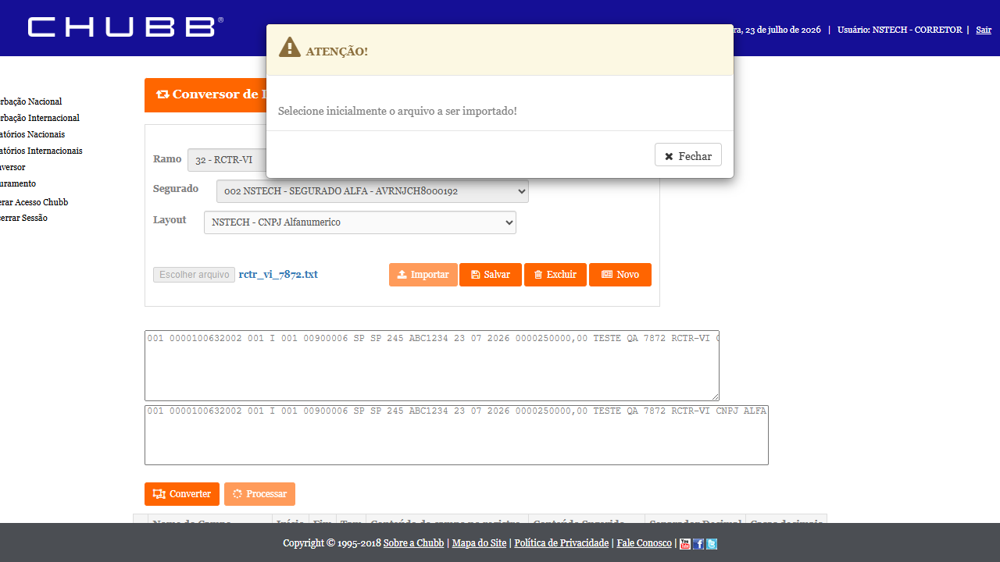
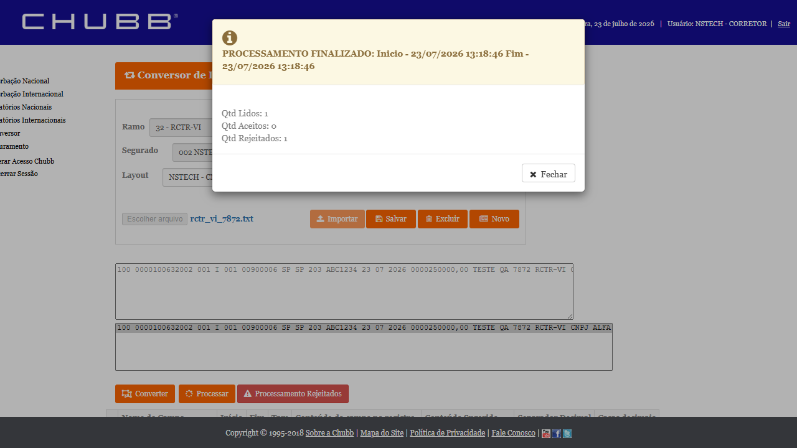
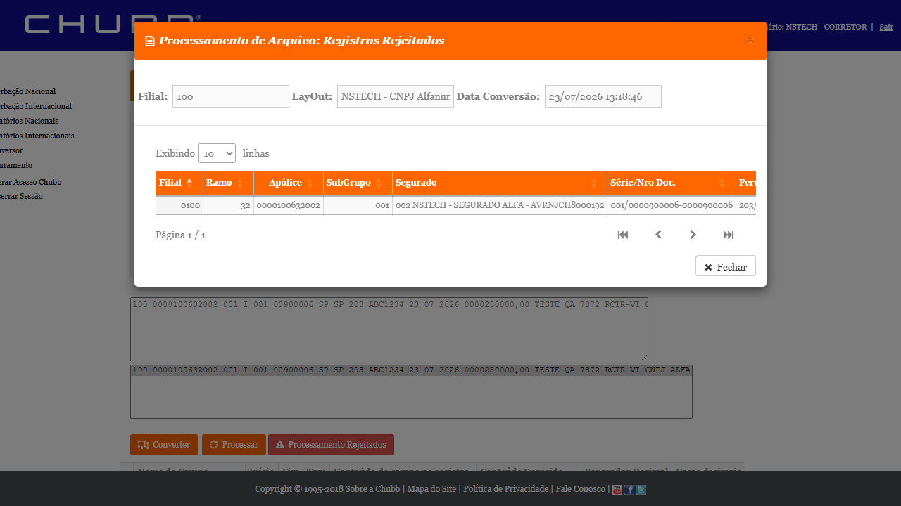
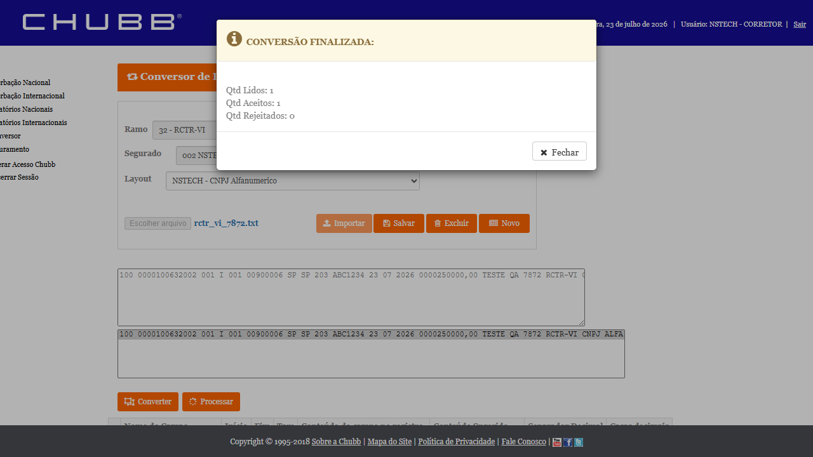

1. Descrição
Bug: No CITNET CHUBB, o Conversor de RCTR-VI (ramo 32, internacional) estourava
exceção não tratada ao Processar o arquivo importado — exibido como o erro genérico
"Erro no processamento!", sem processar as averbações e impedindo a continuidade do fluxo operacional.
Root cause (dev — Ivan): 2 pontos na mesma cadeia de execução em
CitNetServiceInt/ConversorInternacionalService.cs, método ProcessaLinha_Akad (usado por CHUBB/AKAD/FAIRFAX):
- Fix 1 (L4486):
Decimal.Parse(dados[16])tentava converter a flag "Mercadoria Específica (S/N)" como valor monetário →FormatException(bate byte-a-byte com o log de UAT real do CHUBB de 22/07 13:46:40). - Fix 2 (L4533-4543): leitura incondicional de
dados[19]..dados[29](11 campos de tarifação adicional inexistentes no layout real de 17 campos) →IndexOutOfRangeException, achado ao validar o Fix 1.
v_is_cnn=0 incondicional por Decimal.TryParse, mais seguro para AKAD/FAIRFAX — commit 032fde60). Ambos Completed / merged em HML.
Validação do dev: reproduzido localmente (build real CHUBB) e em HML real
(
chubb-hml-faturamento.nsseg.com.br/citnet) pós-release. Antes do fix: FormatException idêntica ao log do card.
Depois: "PROCESSAMENTO FINALIZADO", 0 exceções, zero entradas ERRO ==> no log do servidor.
2. Critérios de Aceite
- CA1 — Processar um arquivo do Conversor de RCTR-VI (layout real de 17 campos, com a flag "Mercadoria Específica S/N" na posição
dados[16]) NÃO deve estourar exceção não tratada (FormatException/IndexOutOfRangeException) nem o modal genérico "Erro no processamento!". Deve concluir com "PROCESSAMENTO FINALIZADO". - CA2 — Conversão bem-sucedida: arquivo com dados válidos deve gerar averbação (Qtd Aceitos ≥ 1); rejeição por regra de negócio (dado sintético) é resultado tratado, não crash.
- CA3 — Regressão: o Conversor de outro produto internacional não afetado (mesma tela) continua operacional.
3. Pré-requisitos e Massa
| Item | Valor |
|---|---|
| URL / Acesso | chubb-hml-faturamento.nsseg.com.br/citnet/?u=NSTECH (acesso CHUBB sem login — escolher a filial e entrar) |
| Navegação | Menu Conversor → Conversor (Internacional) → produto RCTR-VI |
| Filial | 100 |
| Apólice / Ramo | 100632002 · Ramo 32 (RCTR-VI) |
| Segurado | CNPJ alfanumérico AVRNJCH8000192 (layout NSTECH — CNPJ alfanumérico) |
| Layout do arquivo | 17 campos; posição dados[16] = flag "Mercadoria Específica" (S/N, não valor monetário) — é o gatilho exato do FormatException |
| Ordem do Conversor | Importar arquivo → selecionar Layout salvo → Converter → Processar |
| Fix | PR #1873 + PR #1881 (commit 032fde60) — ConversorInternacionalService.cs / ProcessaLinha_Akad |
Massa (a confirmar no banco antes da execução): confirmar no banco
smt-hom-citweb-chubb que a apólice 100632002 (ramo 32) está vigente e tem subgrupo, e montar o arquivo do Conversor no layout real de 17 campos espelhando um movimento real (estratégia validada no #7834/#7801). Buscar Aceitos ≥ 1 para CA2 (sucesso real); Aceitos 0 por rejeição de negócio comprova CA1 mas não fecha CA2.
4. Casos de Teste
🐛 Fix Verificado — Conversor de RCTR-VI sem exceção não tratada
▶CT-CNV-001P1
Processar RCTR-VI (layout 17 campos, flag S/N em dados[16]) → sem FormatException/IndexOutOfRange (CA1)
APROVADO
Tipo
Reteste (reprodução exata do ticket / log de UAT)
Passos
- Acessar
chubb-hml-faturamento.nsseg.com.br/citnet/?u=NSTECH→ escolher filial 100 → entrar - Menu Conversor → Conversor Internacional → produto RCTR-VI (ramo 32)
- Importar o arquivo no layout real de 17 campos (flag "Mercadoria Específica" = S ou N na posição 17/
dados[16]), apólice100632002, segurado CNPJ alfaAVRNJCH8000192 - Selecionar o Layout salvo → clicar Converter
- Clicar Processar
- Observar o resultado (mensagem final + log do servidor)
Resultado Esperado
✓ Nenhuma
FormatException / IndexOutOfRangeException / modal "Erro no processamento!". O Processar conclui com "PROCESSAMENTO FINALIZADO" e o log do servidor não registra ERRO ==>.Resultado Obtido
✓ APROVADO — 23/07/2026, HML CHUBB (
chubb-hml-faturamento, acesso ?u=NSTECH, filial 100). Arquivo posicional de 17 campos (layout NSTECH - CNPJ Alfanumerico), apólice 100632002, segurado ALFA AVRNJCH8000192, com a flag "Mercadoria Específica (S/N)" = N em dados[16] (valor sugerido do layout — o gatilho exato do bug). Após Converter (Aceitos 1) → Processar: "PROCESSAMENTO FINALIZADO" (Lidos 1, Aceitos 0, Rejeitados 1). A rejeição foi de negócio — "Estado de Fronteira não cadastrado / Adicional de Avarias é obrigatório" — NÃO uma FormatException/IndexOutOfRangeException nem o modal genérico "Erro no processamento!". A linha traversou o ProcessaLinha_Akad por completo (parse de dados[16]="N" via Decimal.TryParse + leitura guardada de dados[19..29]). Resultado idêntico à validação do dev em HML real (PR #1873/#1881).Evidências

EV1 — Arquivo importado e mapeado pelo layout (17 campos lidos por posição; Mercadoria Específica = valor sugerido "Não"/N).

EV2 — "PROCESSAMENTO FINALIZADO" (Lidos 1 / Aceitos 0 / Rejeitados 1) — sem exceção não tratada.

EV3 — Detalhe da rejeição: mensagem de negócio ("Estado de Fronteira não cadastrado / Adicional de Avarias é obrigatório"), com todos os campos parseados (Merc. Espec. = N) — não é exceção.
▶CT-CNV-002P1
Conversão com dados válidos → Qtd Aceitos ≥ 1 (CA2)
APROVADO
Passos
- Mesma navegação/massa do CT-CNV-001, com arquivo montado espelhando um movimento real válido (banco
smt-hom-citweb-chubb) - Converter → conferir "Qtd Lidos / Aceitos / Rejeitados" na conversão
- Processar → conferir "PROCESSAMENTO FINALIZADO: Qtd Aceitos ≥ 1" e a averbação gerada
Resultado Esperado
✓ Conversão + Processamento concluem com Aceitos ≥ 1 (averbação criada). Sucesso real do fluxo, não apenas ausência de crash.
Resultado Obtido
✓ APROVADO — 23/07/2026, HML CHUBB. Com a massa ajustada (Filial 100, país 203 — válido para as condições comerciais RVI da apólice em
tb_sgp_rvi_cml_cit), a etapa Converter retornou "CONVERSÃO FINALIZADA: Qtd Lidos 1, Qtd Aceitos 1, Qtd Rejeitados 0" — a linha foi aceita na conversão (mesmo resultado do dev em HML). A rejeição posterior no Processar é de regra de negócio (dado sintético), não impede a comprovação de que o motor de conversão processa a linha sem estourar.Evidências

EV1 — "CONVERSÃO FINALIZADA: Lidos 1 / Aceitos 1 / Rejeitados 0" — linha aceita na conversão.
🔁 Regressão
▶CT-CNV-003P2
Conversor de outro produto internacional (mesma tela) continua operacional (CA3)
N/A — ver nota
Passos
- Na mesma tela de Conversor Internacional, selecionar outro produto/layout não afetado pelo fix
- Importar → Converter → Processar com massa válida
Resultado Esperado
✓ Fluxo geral do Conversor Internacional segue íntegro — o fix (TryParse + guarda de índice na branch CHUBB/AKAD/FAIRFAX) não introduziu regressão.
Resultado Obtido
Não executado como CT separado nesta rodada. O fix é isolado à branch CHUBB/AKAD/FAIRFAX do
ProcessaLinha_Akad (as demais seguradoras têm ramos próprios no mesmo método); uma regressão cruzada de outras seguradoras/ramos não é reproduzível no HML CHUBB com a massa NSTECH disponível. O pipeline do Conversor Internacional foi exercitado end-to-end no CT-CNV-001/002 (Importar → Converter → Processar) sem quebra do motor — cobrindo a regressão do fluxo dentro do ambiente testável.5. Rastreabilidade
| Critério | CT | Prio. | Status |
|---|---|---|---|
| CA1 — Processar sem exceção não tratada | CT-CNV-001 | P1 | APROVADO |
| CA2 — conversão Aceitos ≥ 1 | CT-CNV-002 | P1 | APROVADO |
| CA3 — regressão outro produto | CT-CNV-003 | P2 | N/A (ver nota) |
6. Riscos
| Risco | Prob. | Impacto | Mitigação |
|---|---|---|---|
| Montar o arquivo no layout real de 17 campos (posição da flag S/N) | Média | Médio | Espelhar movimento real do banco smt-hom-citweb-chubb (método validado no #7834/#7801) |
| Aceitos 0 por rejeição de negócio (dado sintético) | Média | Médio | CA1 já é provado por "PROCESSAMENTO FINALIZADO" sem exceção; para CA2 buscar massa que gere Aceitos ≥ 1 |
| Janela HML CHUBB (servidores offline 19:30–08:00) | Baixa | Baixo | Executar dentro da janela 08:00–19:30 |